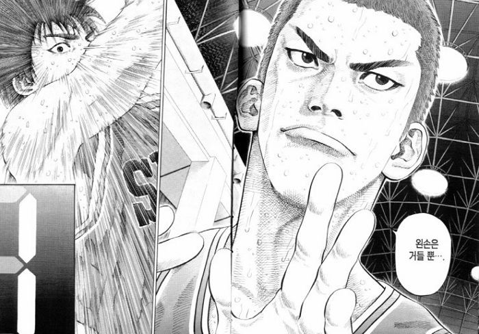
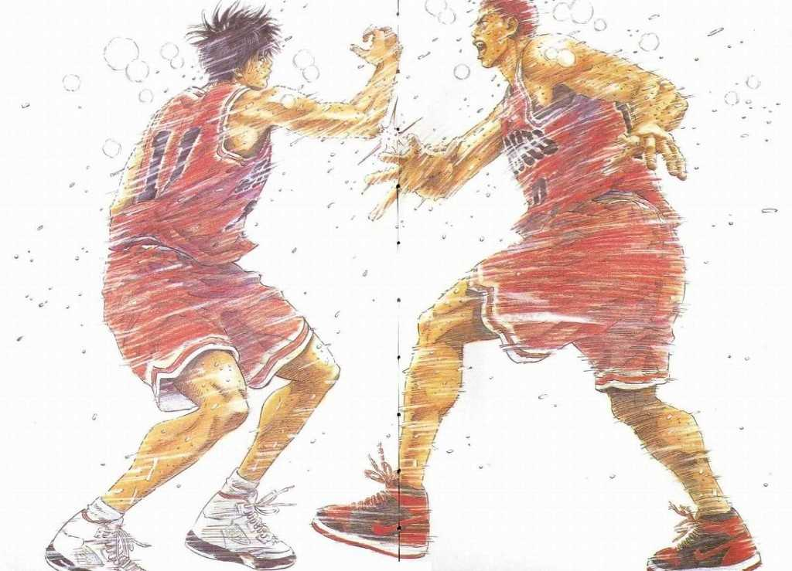
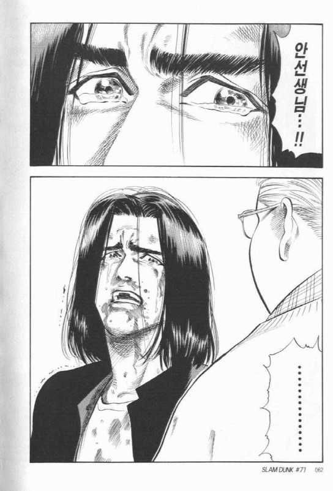
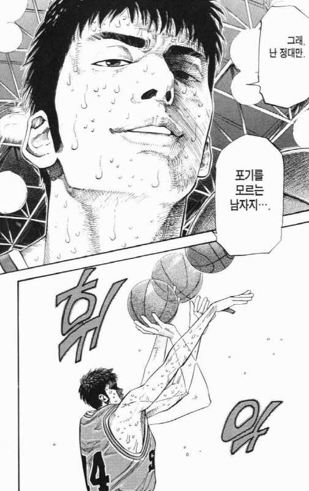
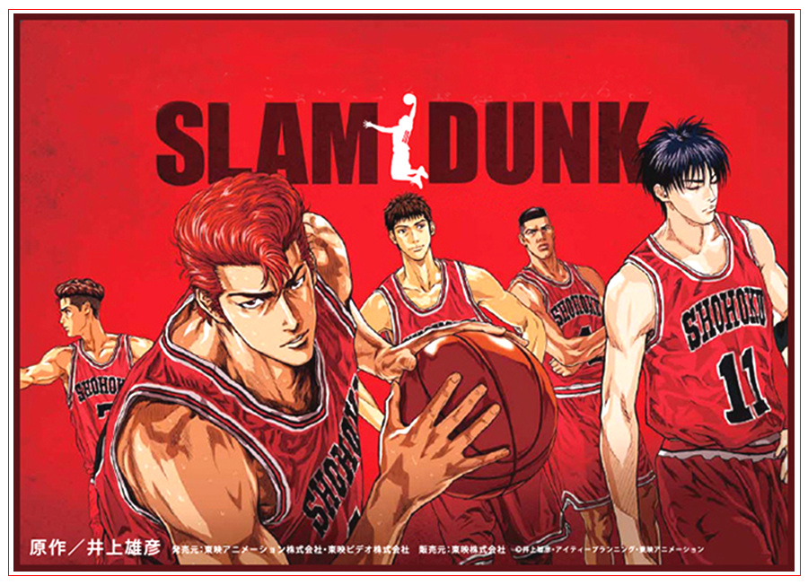

'농구'라는 말을 들을때면 생각나는 것이 두가지가 있는데 첫번째로 'NBA' 두번째로 '슬램덩크'라는 만화이다. 둘중 슬램덩크에 대해 이야기를 해볼 생각이다.
당신은 슬램덩크라는 만화를 아는가?
혹시 누군가가 나에게 당신이 본 만화중 가장 기억에 남는 만화는 무엇인가?라는 질문을 하면 나는 당연하듯이 슬램덩크라고 말할것이다. 그정도로 많이 보았고 가장 기억에 남는 만화다. 슬램덩크는 90년대 우리의 가슴에 NBA와 더불어 '농구'라는 것을 각인시켜준 만화이다.
강백호(사쿠라기 하나미치) NO.10 '왼손은 거들뿐'
189.2CM 83KG PP
빨간 원숭이라고 불리는 슬램덩크의 주역 주인공 강백호이다. 중학시절부터 유명한 싸움꾼이며 뛰어난 신체에 동물적인 운동신경으로 북산의 차기 에이스(?)라고 불린다. 처음에는 농구를 별로 좋아하지 않았지만 후에 정말 농구를 좋아하고 사랑하게 되는 인물이다.
서태웅(루카와 카에데) NO.11 '여기서 널 쓰러뜨리고 간다.'
187CM 75KG SP
강백호가 라이벌(?)로 생각하는 인물중 한명이며 강백호가 속해 있는 북산고교의 에이스라고 불린다. 과묵하고 지기 싫어하는 성격을 가지고 있고 중학교때부터 농구실력으로 스타플레이어인 인물이다.
채치수(아케다 다케노리) NO.4 '북산은 지지않는다.'
197CM 93KG C
강백호가 속해있는 북산고교 농구팀의 주장을 당담하고 있으며 강백호가 고릴라라고 부른다. 고등학교 3학년의 나이이지만 얼굴은 고등학생이 아닌듯한 신체와 얼굴을 가지고 있다. 누구보다 전국재패를 꿈꿔온 사나이고 엄격하고 포스있는 리더로써 면목을 보여주는 인물이다.
정대만(마츠이 히사시) NO.14 '그래, 난 정대만 포기를 모르는 남자지'
184CM 70KG SG
북산의 3점 슈터로 뛰어난 재능으로 중학교 전국 MVP출신이다. 불꽃남자 정대만으로 불리며 고교시절 무릎부상으로인해 농구를 포기하고 북산고 농구부에 질투로 복수를 위해 싸움을 벌이지만 안감독님을 본후 다시 북산고교의 농구부로 들어오게 된다.
송태섭(미야기 로타) 'NO.7 '포인트가드 NO.1은 나야'
168CM 59KG PG
북산의 포인트가드로 공수 발란스를 잡아주며 빠른 스피드와 패스를 자랑하는 선수이다. 주인공인 강백호와 친하며 많은 기술들을 알려주게 된다.
권준호(코구레 키미노부) NO.5 '날 울리지마라 문제아주제에.'
178CM 62KG SF
북산의 부주장으로 채치수와의 성격과는 반대지만 농구에대한 열정과 관심만큼은 채치수와 비슷하다. 북산의 주전맴버는 아니지만 가끔 경기에 출전해 큰 활약을 보여주고 부드럽고 따뜻한 마음을 가졌다.
안감독 ' 포기하면 그 순간이 바로 시합 종료에요.'
북산의 농구부의 감독이며 KFC의 사장과 닮은(?) 생김세를 하고있다. 슬램덩크에서 중요한 인물 중 한명이며 강백호의 농구 실력이 크게 늘게 해주는 큰역활을 해주는 사람이다.
강백호가 농구를 정말 좋아하는걸 알수있는 장면이다. 이 장면에서 채치수가 강백호에게 감동을 받은 장면이다.

누구나 아는 슬램덩크 장면중 하나라고 생각한다. 마지막화에서 나오는 장면이다.
서태웅과 강백호는 서로 사이가 그렇게 좋지 않았다. 서로 게임을 할때 서로 패스도 하지 않는데 이 장면은 유일하게 서태웅이 강백호에게 패스를 해주는 장면이다.

이장면은 위의 게임이 끝난후 서태웅과 강백호가 하이파이브 하는 장면이다. 슬램덩크를 본 사람들이라면 누구든 손꼽을 장면이다. 나도 이 장면을 보고 소름이 돋았다.

이장면은 정대만이 다시 북산으로 돌아오는 장면이다. 농구를 누구보다 좋아하고 사랑했던 그는 안선생을 보고 다시 농구부에 합류하게 된다. 이 장면으로 많은 사람들이 패러디를 했을 정도로 명장면에 뽑힌다.

정대만이 농구부를 떠나 훈련을 안했을때 다른사람들의 노력에 뒤쳐져있었다. 시합중 정대만은 지칠때로 지치고 더이상 농구시합을 이어나가는것은 불가능 했는데 자신이 포기하지 않고 마지막 슛을 쏘는 장면이다.

슬램덩크는 정말 나에게 없으면 안될 정도로 소중한 만화이다. 누구보다 많이 보았고 누구보다 좋아한 만화이다. 슬램덩크를 안본 사람들에게 정말 한번씩 보라고 강력 추천한다.